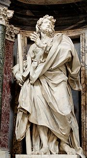

| Иаков Алфеев Материал из Википедии — свободной энциклопедии |
|  | Иа́ков Алфе́ев (греч. Ιάκωβος ο Μικρός, лат. Iacobus Minor — Иаков Младший) — апостол
Иисуса Христа, упоминаемый в Новом Завете. Брат апостола и Евангелиста Матфея. Во всех четырёх
Евангелиях его имя приводится в списке апостолов (Мф.10:3; Мк.3:18; Лк.6:15), однако других
сведений о нём не сообщается.
Согласно жития, Иаков был мытарем, проповедовал в Иудее, а затем вместе апостолом Андреем отправился в Эдессу. После самостоятельно вёл проповедь в Газе и Елевферополе (Южная Палестина). Принял мученическую смерть (был распят на кресте) по дороге в Египет в городе Острацине. Иакова Алфеева следует отличать от апостола Иакова Зеведеева или Иакова Старшего, а также от Иакова, «брата Господня», апостола из числа 70, первого епископа Иерусалима, называемого Иаковом Младшим. Путанице у некоторых авторов в прошлом способствовало то обстоятельство, что Иакова Алфеева также иногда называют Иаковым Младшим. Память в Православной церкви совершается (по юлианскому календарю): 30 июня (Собор двенадцати апостолов) и 9 октября; в Католической церкви 3 мая. |